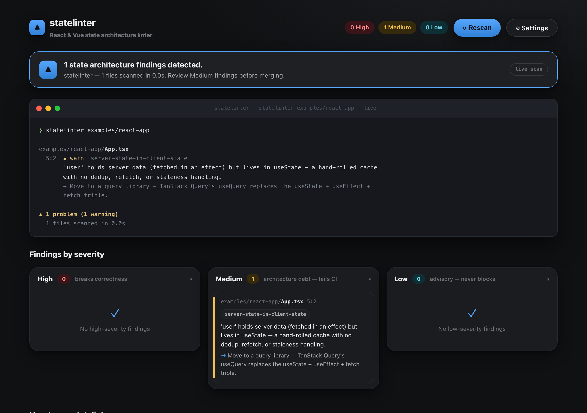
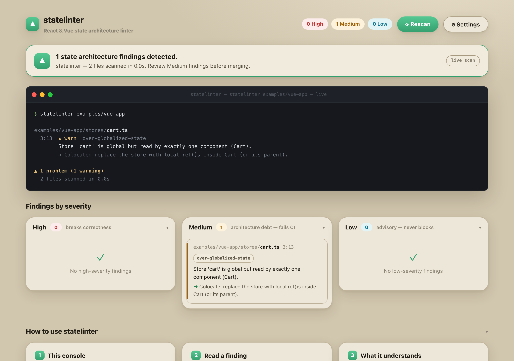
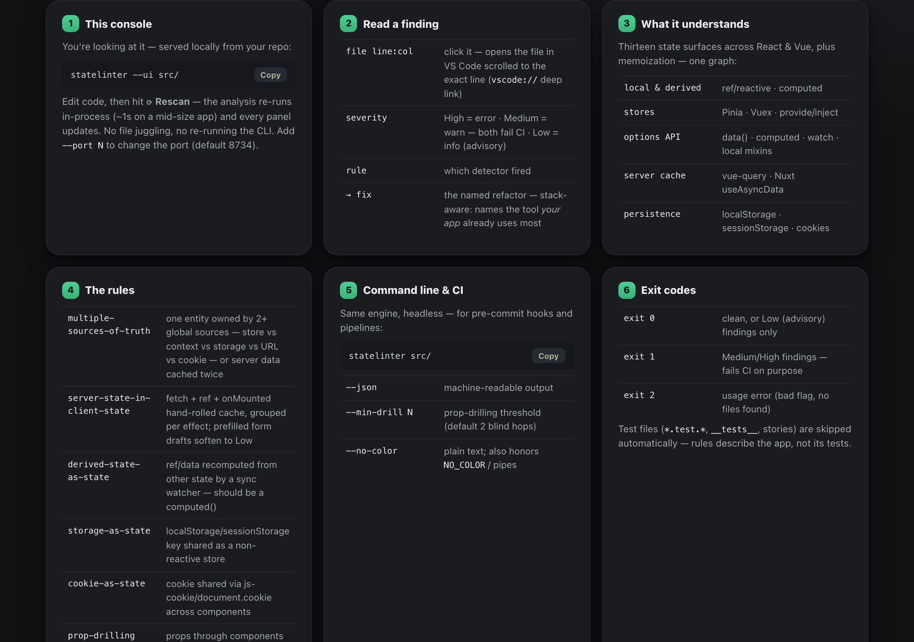
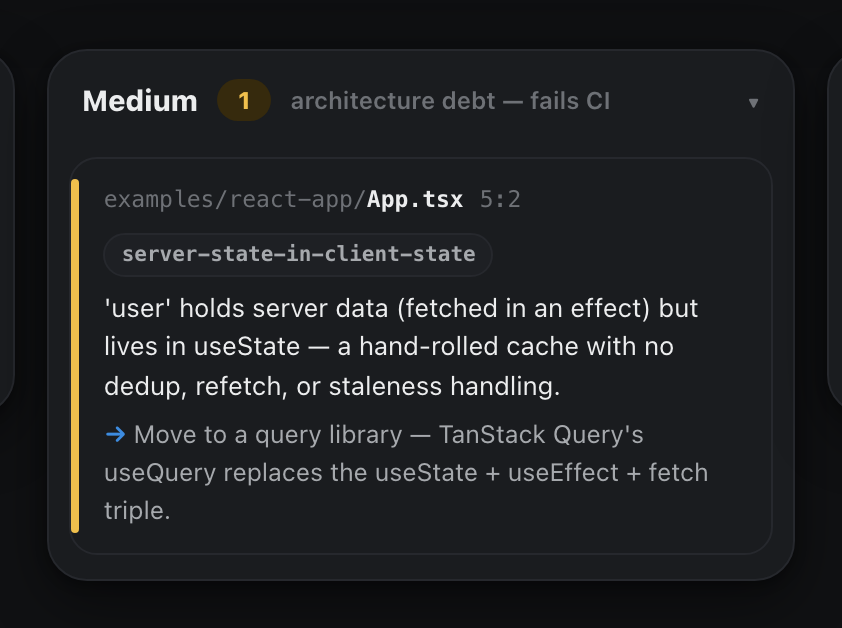

The problem
State placement decays. And no one tool tells you.
Modern React apps spread state across Context, Redux/RTK, RTK Query,
Zustand, TanStack Query, and local useState. Modern Vue
apps run the same rot with ref/reactive,
Pinia, Vuex, provide/inject, and Nuxt's data-fetching composables.
No single dev owns the whole picture in either ecosystem. Over time,
with multiple hands in the code, state placement decays: server data
cached in three places, props drilled four levels, “global” state
read by one component. It becomes an albatross — every tool inspects
one silo, in one framework.
statelinter isn't a profiler. It's a source-of-truth auditor that sits above the per-library devtools: it models every state source in your app as one graph and flags the placement mistakes that accumulate when several devs touch the same code. All detection is static — no build step, no browser, no instrumentation. That's what makes it runnable headless in CI on every PR.
Receipts
The console, on two real example apps.
Terminal output, collapsible severity columns, and full instructions in one page. Edit code, hit Rescan — the analysis re-runs in-process. Everything below is a real capture, not a mockup.




Why these rules
statelinter invented none of its opinions.
It made the ecosystem's existing canon enforceable — rules that already live in docs and blog posts, that nobody runs.
Framework canon
derived-state-as-state is React's “You Might Not
Need an Effect” and Vue's computed-over-watchers docs, as a
check instead of a paragraph.
server-state-in-client-state is the TanStack/TkDodo
server-state-is-not-client-state doctrine.
prop-drilling is React's “Passing Data Deeply” and
Vue's provide/inject guidance.
Community doctrine
over-globalized-state is state colocation, Kent C.
Dodds's argument made structural.
over-broad-selector is the Redux Style Guide and
Zustand's own selector guidance.
multiple-sources-of-truth is the
single-source-of-truth principle every store library preaches
and none of them check for you.
Dogfood hardening
Every guard and hedge — accumulator setters excluded, prefilled
drafts softened, updater-form
set(prev => …) excluded — came from a false
positive on a production codebase and became a permanent
regression test.
The rules aren't new. What's new is where they run: cross-file, cross-library, in CI — not in a doc nobody rereads before they ship.
The catalogue
Eleven rules, across thirteen state surfaces.
Recommendations are stack- and framework-aware: statelinter names the dominant tool your app leans on and phrases the fix in the origin framework's idiom.
| Rule | Fires when | Recommends |
|---|---|---|
multiple-sources-of-truth |
one entity owned by 2+ global sources (context / store / provide-inject / storage / URL / cookie), or server-cached twice | Consolidate on one owner |
server-state-in-client-state
|
useState/ref fed by fetch/await in
an effect or lifecycle hook; prefilled drafts soften to Low
|
TanStack / RTK Query, or Nuxt's useAsyncData/useFetch |
derived-state-as-state |
useState/ref recomputed from other
state by a synchronous effect/watcher
|
useMemo/computed — delete the
state + effect
|
storage-as-state |
a localStorage/sessionStorage key read+written across 2+ components (non-reactive) |
own it in one store with persist
|
cookie-as-state |
a cookie shared across components via js-cookie /
react-cookie /
document.cookie
|
one reactive owner; persist from there |
url-state-forked |
a useState copy of a URL search param that goes
stale on back/forward
|
read the param directly |
prop-drilling |
a JSX prop or Vue template bind passes through N components that only forward it (cross-file, blind hops named) | Context/store, or composition (children / slots) |
over-globalized-state |
a global store or context/provide-inject with exactly one real consumer; dead provided values | colocate / delete |
over-broad-selector |
bare useStore() or identity selector on a
zustand store, or a component-scope
$subscribe on a whole pinia store
|
narrow the selector; watch a field, or a
persist plugin
|
defeated-memoReact
|
React.memo receiving inline
object/array/function props — the memo never holds
|
stabilize the props, or drop the memo |
pointless-memoReact
|
useMemo/useCallback with no deps
array, or an inline literal in the deps
|
fix the deps, or compute inline |
Honesty is the brand
Silence beats lying.
A finding you can't trust is worse than no finding. statelinter would rather stay quiet than guess — and it's explicit about what it doesn't cover yet.
The trust contract
Never guess. Generic entity names (data,
state, error) are suppressed, not
matched. Dynamic query/storage keys get no source.
Unclassifiable state is unknown and never
auto-recommended on.
Silence beats lying. Single-owner storage, accumulator
setters, event-driven effects, and updater-form
set(prev => …) are all excluded. When a scan
hits a Vue component shape it can't resolve, it says so on
stderr and suppresses “exactly one reader” findings for that run
— an undercounted reader is a missed finding, but a false “only
one reader” claim would be worse.
-
vue-router URL state isn't modeled yet.
useRoute().queryisn't tracked; the React URL adapters (useSearchParams, nuqs) are. - React class components aren't modeled. Hooks-era React only.
-
Some Vue Options API escape hatches are unresolved.
extends, package-imported or dynamic mixin lists, and unrecognized export shapes are flagged on stderr rather than guessed at.
Quickstart
Point it at a folder. Gate a PR.
Works on .tsx / .jsx / .ts /
.js / .vue. Requires Node 20+. Test,
story, and config files are skipped automatically.
# install $ npm i -D statelinter # scan — pretty output, exit 1 on Medium/High findings (the CI gate) $ npx statelinter src/ # serve the interactive findings console (one-click Rescan, binds 127.0.0.1) $ npx statelinter --ui src/ → http://localhost:8734 # machine-readable, or tune the prop-drilling threshold $ npx statelinter src/ --json $ npx statelinter src/ --min-drill 3
clean, or only Low (advisory) findings
Medium/High findings — fails CI on purpose
usage error (bad flag, no files found)